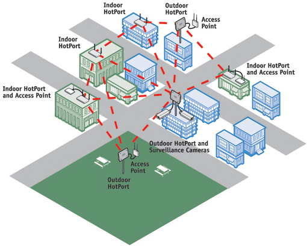

| Nome |
Immagine |
Descrizione |
Vantaggi/Svantaggi |
Rete
Punto a Punto |
 |
Una Rete Punto a Punto e' realizzata unendo ogni device della rete con un cavo |
Vantaggi
1)Ogni nodo puo' parlare direttamente con tutti gli altri.
2)E' una rete molto veloce.
Svantaggi
1)Il costo della rete e' molto alto.
2)Sono neccessari dei device speciali cioe' con tante shede di rete quanti sono i nodi della rete.
|
| Rete a Stella |
 |
Una Rete a Stella funziona collegando tutti i device a un punto centrale. Questo nodo centrale puo' un computer speciale o una Hub o uno Switch. |
Vantaggi
1)E' una rete semplice da realizare.
2) E' molto economica.
Svantaggi
1)Nel caso si rompa il nodo centrale la rete smette di funzionare.
2)tutte le comunicazioni passano nel nodo centrale che se non e' ben programmato lascia vedere i dati agli altri nodi.
|
| Rete ad Anello |
|
La Rete ad Anello prevede che ogni nodo sia collegato ad altri due. |
Vantaggi
1)E' una rete semplice.
2)E' una rete semplice da espandere.
Svantaggi
1)La rottura di un nodo blocca tutta la comunicazione.
2)Per parlare tra due nodi potrebbe essere necessario passare per tutti gli altri nodi della rete.
|
| Rete a Bus |
|
Tutti i nodi sono collegati tra di loro per mezzo di un bus, cioe' un canale che possiede due estremita' e un accesso ad esso. Le due estremita' sono chiuse con dei terminatori. |
Vantaggi
1)E' una rete semplice da realizzare.
2)E'economica.
Svantaggi
1)La rottura di un terminatore puo' bloccare la rete.
2)La rottura del bus blocca tutta la rete.
|
| Rete ad Albero |
 |
E' una rete in cui sono definite delle gerarchie cioe' un nodo puo' essere padre di altri nodi.
Ogni nodo e' collegato ad almeno un altro nodo che puo' vedere pezzi di rete maggiori. |
Vantaggi
1)E' adatta a gestire piccoli gruppi che devono condividere risorse.
2)La rottura di un nodo consente alle sottoreti di funzionare.
Svantaggi
1)E' una rete complicata da realizzare e mantenere.
2)L'aggiunta di un nodo puo' richiedere configurazioni complesse. |
| Nome |
Immagine |
Descrizione |
Vantaggi/Svantaggi |
| Lan |
|
Local Area Network : e' una rete di piccole dimensioni normalmente copre una stanza o piccoli edifici. |
Vantaggi
1)E' una rete semplice.
2)E' facilmente estendibile.
Svantaggi
1)E' adatta per piccole aree.
2)Ha una sicurezza limitata. |
| Can |
 |
Campus Area Network : E' una rete piu' grande e complessa di una Lan copre normalmente piu' edifici vicini ed e' composta da sottoreti Lan. |
Vantaggi
1)Normalmente e' piu' sicura di una Lan.
2)Consente la condivisione di risorse aziendali senza accesso a internet.
Svantaggi
1)E' normalmente piu' costosa.
2)E' normalmente piu' complessa da gestire.
|
| Man |
|
Metropolitan Area Network : E' una rete che copre parti di una citta'. E' normalmente composta da sottoreti Can. |
Vantaggi
1)Consente di condividere risorse aziendali anche tra sedi diverse.
2)E' una rete sicura.
Svantaggi
1)E' una rete complicata e costosa.
2)Non e' sempre possibile realizzarla.
|
| Wan |
|
Wide Area Network : E' una rete che copre regioni della terra.Normalmente serve per collegare Man. |
Vantaggi
1)Consente di realizzare una rete parallera ad internet.
2)E' una rete sicura.
Svantaggi
1)Ha dei costi elevatissimi.
2)E' una rete complicata da realizzare e da gestire.
|
| Wlan |
|
Wirless Lan Area Network : E' una rete che si basa su componenti Wi-Fi. |
Vantaggi
1)E' una rete semplice da realizzare e gestire.
2)E' la rete piu' economica da realizzare.
Svantaggi
1)E' una rete poco sicura.
2)Le prestazioni offerte non sono molto buone.
|